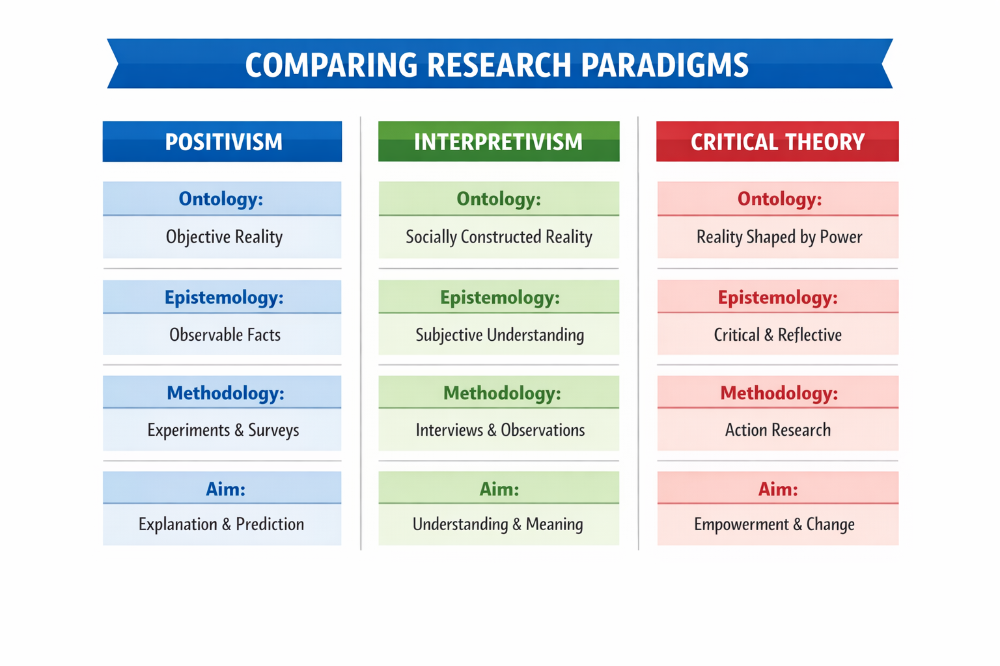

You will get a student scenario and an AI-generated output. Your task is to figure out a prompt that produces a similar result — then compare your approach to the original prompt that generated it.
1
Read the caseStudy the student's situation and goal.
2
Study the outputWhat kind of response is this? What does it require from a prompt?
3
Try it yourselfOpen Copilot and prompt for a similar output.
4
Paste & revealPaste your prompt, then reveal the original.
Exercise 1 of 2Literature synthesis — table output
Student scenario
Case
Kofi, 2nd-year Psychology
Kofi is writing the literature review section of his research proposal on social media use and adolescent mental health. He has identified four relevant studies and taken notes on each one. He now needs to present them as a synthesis table — a structured comparison format commonly used in academic writing to map sources side by side across consistent dimensions.
He wants to use AI to take his rough study notes and transform them into a clean, ready-to-use table. He will review the output for accuracy and adjust any errors before including it in his draft.
💻
Recommended tool: Microsoft 365 Copilot
Sign in at copilot.microsoft.com using your VU student account (your-student-id@student.vu.nl). Any AI tool works — but remember: when you provide the source material in your prompt, the AI is reorganising your information, not retrieving data from its training. Still verify key details against the original papers.
The output Kofi received
AI-generated synthesis table
Study
Research Focus
Sample
Method
Key Finding
Limitation
Twenge et al. (2018)
Trends in adolescent depression linked to digital media use
500,000 US adolescents aged 13–18 (2010–2015)
Longitudinal survey (Monitoring the Future dataset)
Social media use correlated with increased depressive symptoms, especially in girls
Correlational design; cannot establish causation
Valkenburg et al. (2022)
Individual differences in how social media affects adolescent wellbeing
2,155 Dutch adolescents
Daily diary study over 6 weeks
Effects were highly individual — positive for some adolescents, negative for others
Self-report diary; relatively short observation window
Odgers & Jensen (2020)
Strength of evidence linking screen time to mental health outcomes
Systematic review of 40 studies
Systematic review
Evidence for harmful effects is minimal and inconsistent across the included studies
Heterogeneous study designs limit direct comparability
Kelly et al. (2019)
Heavy social media use and wellbeing in adolescents
10,904 UK adolescents aged 13–16
Cross-sectional survey
Using social media >3 hrs/day associated with poor sleep and body image concerns, particularly in girls
Cross-sectional design; causal direction cannot be established
Your turn
Open Microsoft 365 Copilot (or another AI tool) and write a prompt that generates a similar synthesis table. You can feed it the same four studies — copy their details from the table above — or substitute studies from your own field or research topic.
Focus on getting AI to produce the same kind of output: a structured table with consistent columns. Paste the prompt you used once you have a result you’re satisfied with.
Paste your prompt to unlock the reveal button
Paste your prompt first
The original prompt
Prompt used to generate this output
I'm writing a literature review on social media use and adolescent mental health. I've found four studies I want to synthesize. Please organize them into a comparison table with these columns: Study (Author & Year), Research Focus, Sample, Method, Key Finding, Limitation.
Here are the studies:
- Twenge et al. (2018): Longitudinal survey of 500,000 US adolescents (aged 13–18), 2010–2015. Used Monitoring the Future dataset. Found that social media use significantly correlated with increased depressive symptoms, particularly in girls. Limitation: correlational design.
- Valkenburg et al. (2022): Daily diary study with 2,155 Dutch adolescents over 6 weeks. Found highly individual effects — positive for some adolescents, negative for others. Limitation: self-report diary; short observation window.
- Odgers & Jensen (2020): Systematic review of 40 studies on screen time and adolescent mental health. Found that evidence for harmful effects is minimal and inconsistent. Limitation: heterogeneous study designs limit comparison.
- Kelly et al. (2019): Cross-sectional survey of 10,904 UK adolescents (aged 13–16). Found that using social media more than 3 hours per day was associated with poor sleep and body image concerns, especially in girls. Limitation: cross-sectional design.
Keep each cell to 1–2 sentences maximum. Use plain academic language.
What to notice when comparing
Look at the original prompt and compare it to your approach:
Column specification: The original lists exactly which columns to use. If you did the same, your table likely turned out consistently structured. If you asked for “a synthesis table” without naming columns, AI may have chosen different ones — sometimes useful, sometimes not what you need.
Source material in the prompt: This is a context-rich prompt — the studies are embedded as input data. The AI is reorganising information you provided, not retrieving it from its training. This makes the output more reliable and easier to verify against original sources.
Cell-length constraint: “1–2 sentences maximum” keeps the table scannable. Without it, AI often writes paragraph-length cells that make the table cluttered and harder to use as a study aid.
What technique is this? This is structured output formatting combined with context injection — you supply the raw material and define the output shape. The AI’s role is data transformation, not knowledge retrieval. That distinction matters for how much you can trust the result.
Exercise 2 of 2Conceptual mapping — diagram output
Student scenario
Case
Yasmin, 1st-year Communication Science
Yasmin is preparing for a research methods seminar in which students are expected to understand the difference between three research paradigms: positivism, interpretivism, and critical theory. She has read the relevant chapter but finds the abstract definitions hard to hold in her head simultaneously.
She wants to use AI to produce a structured conceptual diagram that maps the three paradigms side by side across four dimensions: their view of reality (ontology), how knowledge is obtained (epistemology), what counts as valid research (methodology), and what the purpose of research is (aim). The diagram should be clear enough to use as a study aid and to bring to the seminar.
💻
Recommended tool: Microsoft 365 Copilot — try Designer
Sign in at copilot.microsoft.com using your VU student account (your-student-id@student.vu.nl). For this exercise, try the Designer feature in Copilot — it is built for visual and image output, and may produce something closer to a diagram than a standard text prompt. Bear in mind that different tools will perform differently; some may produce cleaner or more structured visuals than others, so it is worth experimenting.
The output Yasmin received
AI-generated conceptual diagram

⚠️
Note: text in AI-generated images can be scrambled. AI image tools sometimes distort or misspell the text inside diagrams — this is a known limitation. Even so, a visual output can still help you grasp the overall structure and shape of a concept, which you can then recreate more accurately yourself using tools like PowerPoint or Canva.
Your turn
Open Microsoft 365 Copilot (or another AI tool) and write a prompt that gets you a similar structured comparison of the three research paradigms across these four dimensions. Your output does not need to look identical — focus on getting AI to produce the same kind of content: a structured, side-by-side conceptual breakdown.
Once you have a prompt that works, paste it in the box below.
Paste your prompt to unlock the reveal button
Paste your prompt first
The original prompt
Prompt used to generate this output
Create a structured conceptual diagram comparing three research paradigms — positivism, interpretivism, and critical theory — across four dimensions:
1. Ontology: their view of reality
2. Epistemology: how knowledge is obtained
3. Methodology: what counts as valid research
4. Aim: the purpose of research
Format the output as a clear comparison table or structured breakdown that could be used as a study aid. For each paradigm, give a concise label (2–10 words) for each dimension. Use plain language suitable for a first-year student encountering these concepts for the first time.
What to notice when comparing
Look at the prompt above and compare it to yours. A few things worth reflecting on:
Specificity of the dimensions: The original names all four dimensions explicitly. If you named them too, your output was likely more structured; if you left them implicit, AI probably still covered them but less consistently.
Format instruction: The prompt asks explicitly for a "comparison table or structured breakdown." Without this, AI may produce flowing prose instead — content-equivalent but harder to use as a study aid.
Audience specification: "Plain language suitable for a first-year student" calibrates the vocabulary. If you omitted this, the output may have been more technical.
What technique is this? This is a structured prompt — it imposes output constraints (format, dimensions, word-length per cell) to make the response predictable and reusable. Compare it to an open prompt ("explain the three paradigms") and notice the difference in output shape.
Research paradigm content is standard methodology curriculum. Prompt design based on techniques from: Qian, Y. (2025).
Journal of Educational Computing Research, 63(7-8), 1782–1818.
Completed this module?
If you've worked through this practice exercise, you can download your certificate of completion for the Use module.